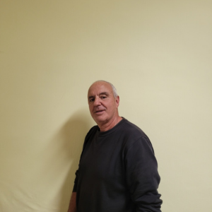
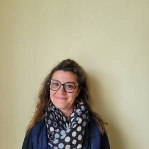
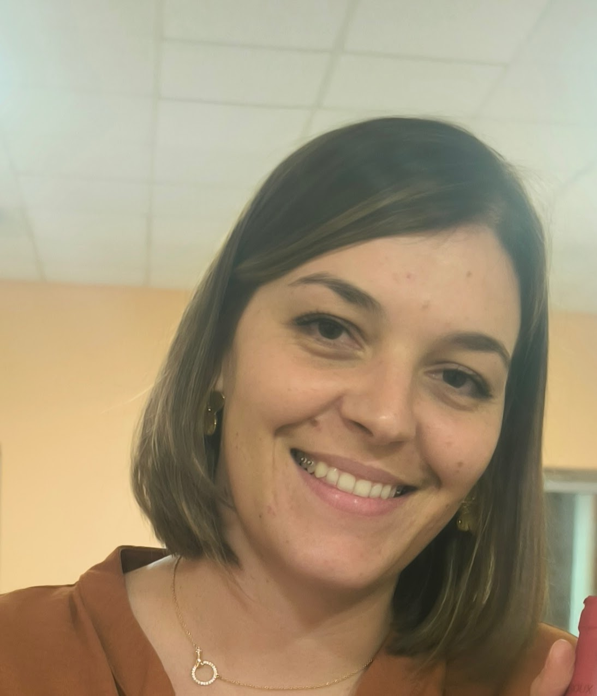

Jeanine Jarraud
1ʳᵉ adjointe
Chargée du personnel administratif et du budget. Correspondante Défense.
Commissions
- Réseau voirie, bâtiments
- Budget
- Appels d'offres et ouverture des plis
- Tourisme
Le conseil municipal de Sussac, élu au service des habitants : le maire, ses adjoints, les conseillers et les commissions qui font vivre la commune.


